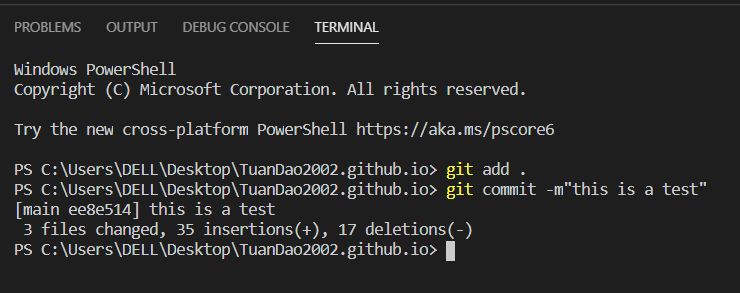
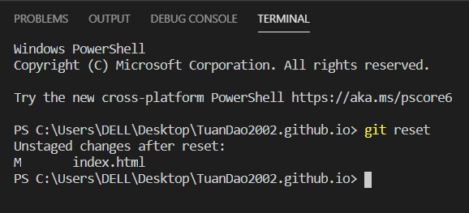
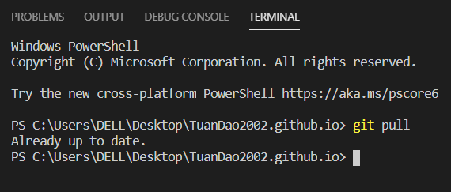
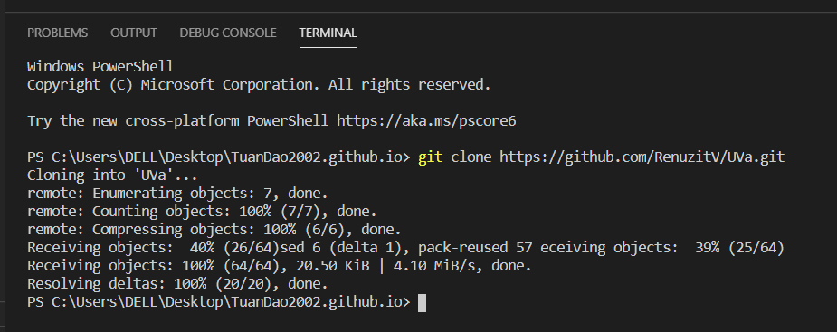

Git Tutorial
For beginners

Window
Mac
You can exercise those commands in Git Bash if it is installed on Window or you can use it in your default Terminal in case of Mac.
Git commit command captures a snapshot of the project's currently staged changes. Committed snapshots can be thought of as “safe” versions of a project—Git will never change them unless you explicitly ask it to. Prior to the execution of git commit, the git add command is used to promote or 'stage' changes to the project that will be stored in a commit. (Atlassian, n.d.)
Conflicts
generally arise when two people have changed the same lines in a file, or if
one developer deleted a file while another developer was modifying it. In these
cases, Git cannot automatically determine what is correct. Conflicts only
affect the developer conducting the merge, the rest of the team is unaware of
the conflict. Git will mark the file as being conflicted and halt the merging
process. It is then the developers' responsibility to resolve the conflict. (Atlassian, n.d.).
In
order to fix the problem, we will use the git pull command to move file
from your GitHub repository to your local machine, then you will choose the
file from your local machine or from GitHub that you have pulled down. Once
selected, use the sequence git add, git commit,git push command
again to resolve the conflict.
Below is the video that gives detailed instructions on how to resolve merge conflict:
Git reset command is used to undo the specific commit, add, merge or pull, it is the opposite of the git add command.
This command fetches and merges changes on the remote server to your working directory. ( Kappagantula, 2020)
This command is used to obtain a repository from an existing URL. (Kappagantula, 2020)
created with
Templated.co .